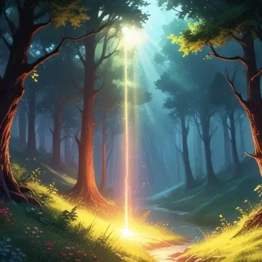

Fertigkeiten
Tiere
Jedes Gspänli hat die Karte mit den Fertigkeiten die zu seinem Tier passen. Normalerweise hat jedes Tier nur 1 Tierfertigkeit. Mit einem langwierigen Ritual kannst du die Fertigkeiten von einem anderen Tier dazu gewinnen.
Deine Tier Fertigkeiten kosten keine Ausdauer.
Bär

- Riechen: Du nutzt deinen Geruchssinn. Etwas zu Essen finden. Ein anderes Tier finden.
- Schwimmen: Du bewegst dich auch im Wasser sehr gewandt.
- Tatze: Du setzt nutzt deine Bärentatze. Etwas schweres zu bewegen. Dich hochzuziehen.
Ente

- Fliegen: Du nutzt deine Federn zum Fliegen.
- Gründeln: Du bist am Grundeln in einem Gewässer, dort kannst du Essen finden oder einen hilfreichen Gegenstand.
- Kälteschutz: Deine Federn dienen zum Schutz vor Kälte. Auch deinen Füssen kann Kälte nichts anhaben.
Eule

- Tarnung: Dein Gefieder bietet dir eine ausgezeichnete Tarnung in deinem Lebensraum. Du kannst damit auch geräuschlos fliegen.
- Rundumsicht: Dein Kopf kann fast vollständig gedreht werden, sodass du alles rund um dich herum sehen kannst.
- Ohren: Du hörst auch eine Maus unter dem Schnee.
Frosch

- Unterwasser: Du kannst sowohl an Land als auch unter Wasser atmen.
- Kleben: Du kannst damit weit entferne Gegenstände zu dir holen.
- Musizieren: Du nutzt dein quaken zum musizieren und kannst auch andere damit erfreuen.
Fuchs

- Nachtsehen: Du siehst in der Nacht aussergewöhnlich gut.
- Orientieren: Du spürst Magnetfelder und kannst dich damit gut orientieren.
- Nachmachen: Du kannst die Geräusche machen und auch solche von anderen Tieren nachahmen.
Hase

- Aufmerksamkeit: Du kannst selbst ein bisschen ausruhen auch wenn du noch wach bist.
- Rundumsicht: Du kannst mit deinen Augen alles rund um dich herum entdecken.
- Hoppeln: Du kannst viele aufeinanderfolgende Sprünge machen und so auch ziemlich hoch und weit kommen.
Luchs

- Hören: Du hörst sehr genau was rund um dich und auch weiter weg passiert.
- Springen: Du hast eine starke Sprungkraft und kannst weite Distanzen überwinden.
- Schleichen: Mit deinen grossen flauschigen Pfoten kannst du leise schleichen.
Schildkröte
- Erinnern: Du weisst ganz vieles. Du hast irgendwann schon einmal davon gelesen.
- Schützen: Du verwendest deinen Panzer als Schutz. Du kannst dich und andere gegen Gefahren schützen.
- Tauchen: Du kannst unter Wasser etwas machen (max. 1 Stunde) oder sogar unter Wasser schlafen (max. 6 Stunden).
Wolf

- Heulen: In der Nacht kannst du heulen. Vielleicht hören dich andere Tiere.
- Mitgefühl: Du kannst es ganz gut mit anderen zusammen. Wenn du anderen hilfst, gelingt dir besonders gut.
- Ausdauer: Du hast eine grosse Ausdauer und kannst lange Strecken ohne Ermüdung laufen.
Waschbär

- Werkzeug-Pfoten: Du kannst mit deinen Pfoten auch komplizierte Sachen öffnen.
- Maske: Du bist gut darin dich zu verkleiden.
- Klettern: Du kannst schnell Bäume rauf unter runter klettern.
Bewachende
Wenn du dich entscheidest eine Bewachendes Gspänli zu sein, dann bedeutet dass das du dass, dass du dich in Zukunft für etwas stark machst und dich dafür einsetzt. Bist du z.B. ein Baum-Bewachendes Gspänli, verpflichtest du dich für Bäume da zu sein. Wenn deine anderen Gspänli nach einer Spielrunden zusammen entscheiden dass du deiner Rolle nicht gerecht wirst, kann es auch passieren dass du deine Fertigkeit wieder verlierst.
Deine Bewachende Fertigkeit zu Nutzen kostet immer 1 Ausdauer.
Wasser-Bewachende

- Wolke: Wenn du eine Wolke am Himmel siehst, kannst du mit ihr ins Gespräch kommen.
- Wasser Formen: Du kannst auch grössere Wassermassen von einem zum anderen Orte bewegen und dabei das Wasser in verschiedenste Formen bringen.
- Wasser Reinigen: Du kannst Schmutz aus Wasser entfernen. Es kann danach ohne Probleme getrunken werden aber auch zum waschen verwendet werden.
Baum-Bewachende

- Wachsen: Du kannst Bäume aber auch andere Lebewesen wachsen lassen.
- Formen: Die Äste der Bäume in deiner Umgebung kannst du nach deiner Vorstellung Formen.
- Früchtereste: Bäume geben dir auch im Winter noch Reste von ihren Früchten. Bucheckern, Eicheln, Lindenblüten, Walnüsse, Haselnüsse, ...
Stein-Bewachende

- Stapeln: Du kannst Steine zu hohen Türmen stapeln.
- Schleifen & Mahlen: Du kannst Steine dazu verwenden um andere Dinge zu mahlen oder zu schleifen.
- Beruhigend: Du legst dir oder einem deiner Gspänli einen rundlichen, warmen Stein in die Pfote.
Luft-Bewachende
- Schweben: Du kannst dich, aber auch Freunde in die Luft heben.
- Wind: Du kannst dem Wind eine Frage stellen.
- Gerüche: Du kannst Gerüche von weit her erkennen.
Blumen-Bewachende

- Wachsen: Du kannst Blumen und andere Lebewesen wachsen lassen.
- Duft: Du kannst mit beliebigen Düften anderen eine Freude bereiten.
- Nektar: Kann Nahrung für andere Tiere sein, aber auch du kannst daraus z.B. Sirup für deine Gspänli machen.
Wetter-Bewachende

- Wolken Gespräch: Falls eine Wolke am Himmel ist kannst du mit ihr reden.
- Sonnen Strahlen: Die Sonne kann dir helfen ihre Strahlen dorthin zu lenken wo du gerne möchtest.
- Schnee: Eignet sich wunderbar für eine Rutschbahn.
Gegenstände
Um den Gegenstand zu Nutzen, musst du ihn berühren können.
Einen Gegenstand zu Nutzen kostet immer 1 Ausdauer.
Zelt

- Schutz: Schutz vor allen möglichen Naturgewalten.
- Verpflegung: Essen und Tränke zubereiten.
- Ruhen: Die ganze Gruppe nimmt kurz Ruhe und kann etwas Ausdauer regenerieren.
Leiter
- Himmel: Du kannst mit der Leiter in ungeahnte Höhen hoch klettern.
- Überqueren: Du kannst die Leiter verwenden um Schluchten zu überwinden.
- Helfen: Deine Leiter ist oft hilfreich um anderen Lebewesen zu helfen.
Becher
- Trink-Wasser: Du kannst deinen Durst mit einem Becher voll Wasser löschen.
- Würfel: Mit den Würfeln in deinem Becher kannst du mit anderen Spiele spielen.
- Heilen: Du kannst Verletzungen oder Krankheiten von Lebewesen lindern.
Amphore
- Wirkliches Bedürfnis: Wenn du oder ein anderes Lebewesen in die Amphore schaust erkennst du was dir wirklich wichtig ist.
- Portal: Du und deine Freunde können in andere Welten gehen.
- Beeren: In deinem Krug hat es genügend Beeren für eine Mahlzeit für ein Gspänli.
Zauber
Ein Zauber ist immer an ein Gegenstand gebunden. Dass kann ein Zauberstab, ein Amulett, ein Ring und vieles mehr sein. Das ist eine Entscheidung.
Einen Zauber zu Nutzen kostet immer 1 Ausdauer.
Ewiges Licht
- Farbe: Du kannst einen Raum mit einer beliegen Farbe zum leuchten bringen. Er leuchtet auch noch einen ganz Tag weiter, nachdem du nicht mehr dort bist.
- Licht: Wenn andere euch suchen, werden sie euer Licht sehen und können euch finden.
- Wachsen: Das Licht hilft Pflanzen und vielleicht auch anderen Dingen schneller zu wachsen als normal.